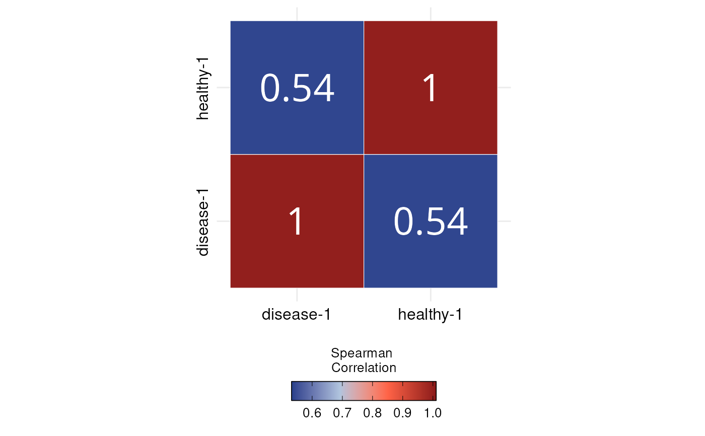

DO Correlation Plot for visualizing similarity between categories
Source:R/DO.Correlation.R
DO.Correlation.RdGenerates a correlation heatmap from expression data to visualize similarity across sample groups. Allows customization of plot type, correlation method, and color scaling using the ggcorrplot2 and ggplot2 architectures. Ideal for comparing transcriptional profiles between conditions or clusters.
Usage
DO.Correlation(
sce_object,
group_by = "orig.ident",
assay = "RNA",
features = NULL,
method = "spearman",
plotdesign = "square",
plottype = "full",
auto_limits = TRUE,
outline.color = "white",
colormap = c("royalblue4", "lightsteelblue", "tomato", "firebrick4"),
lab_size = 10,
lab = TRUE,
lab_col = "white",
axis_size_x = 12,
axis_size_y = 12,
...
)Arguments
- sce_object
Seurat or SCE Object
- group_by
Column to aggregate the expression over it, default "orig.ident"
- assay
Assay in object to use, default "RNA"
- features
What genes to include by default all, default "None"
- method
Correlation method, default "spearman"
- plotdesign
Plot design, default "circle"
- plottype
Show the full plot or only half of it, default "full"
- auto_limits
Automatically rescales the colour bar based on the values in the correlation matrix, default "TRUE"
- outline.color
the outline color of square or circle. Default value is "white".
- colormap
Defines the colormap used in the plot, default c("royalblue4", "royalblue2","firebrick","firebrick4")
- lab_size
Size to be used for the correlation coefficient labels. used when lab = TRUE.
- lab
logical value. If TRUE, add correlation coefficient on the plot.
- lab_col
color to be used for the correlation coefficient labels. used when lab = TRUE.
- axis_size_x
Controls x labels size
- axis_size_y
Controls y labels size
- ...
Additionally arguments passed to ggcorrplot function
Examples
sce_data <-
readRDS(system.file("extdata", "sce_data.rds", package = "DOtools"))
DO.Correlation(
sce_object = sce_data,
group_by = "orig.ident",
assay = "RNA",
features = NULL,
method = "spearman",
plotdesign = "square",
plottype = "full",
auto_limits = TRUE,
outline.color = "white",
colormap = c("royalblue4", "lightsteelblue", "tomato", "firebrick4"),
lab_size = 10,
lab = TRUE,
lab_col = "white"
)
#> Warning: `aes_string()` was deprecated in ggplot2 3.0.0.
#> ℹ Please use tidy evaluation idioms with `aes()`.
#> ℹ See also `vignette("ggplot2-in-packages")` for more information.
#> ℹ The deprecated feature was likely used in the ggcorrplot package.
#> Please report the issue at <https://github.com/kassambara/ggcorrplot/issues>.
#> Scale for fill is already present.
#> Adding another scale for fill, which will replace the existing scale.
